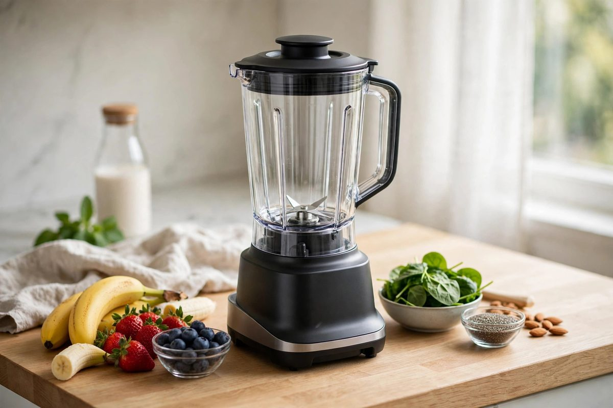

Home » Guides
Best Blender Guide

A good blender is the difference between a smooth, creamy drink and a lumpy, gritty one. But blenders range from twenty pounds to several hundred, and the most expensive is not always the best choice for your needs. This guide explains what matters when choosing a blender for smoothies, how much power you need, which features are worth paying for, and how to keep your blender working well for years.
How much power do you need
Blender power is measured in watts, and it matters most for frozen fruit and ice. A blender with 300 to 500 watts can handle soft fruit and yoghurt, but it will struggle with frozen fruit and ice. A blender with 600 to 900 watts handles most smoothie ingredients well, including frozen berries and ice cubes. A blender with 1000 watts or more, often called a high-powered blender, can blend frozen fruit, nuts, and seeds into a completely smooth drink. If you make smoothies daily with frozen fruit, aim for at least 600 watts.
Types of blender
A countertop blender is the best choice for most people: it has a large jug, a strong motor, and can make several servings at once. A personal blender, with a small cup that doubles as a travel bottle, is good for one person and easy to clean, but it struggles with large amounts of frozen fruit. A hand blender is cheap and easy to store, but it makes thinner smoothies and needs more liquid. An immersion blender works for soft fruit but is not ideal for ice. Choose the type that matches how many people you make smoothies for and how much space you have.
Features worth paying for
A glass jug is heavier but does not stain or scratch, while a plastic jug is lighter and less likely to break. A tamper, a stick that pushes food down while blending, is very useful for thick smoothies and smoothie bowls. Pre-set smoothie programmes are convenient but not essential. A pulse button gives you control over the texture. Dishwasher-safe parts make cleaning easier. A warranty of at least two years is a good sign of quality. Avoid paying extra for a blender with dozens of settings you will never use.
Looking after your blender
Clean your blender straight after use: fill the jug halfway with warm water and a drop of washing-up liquid, blend for thirty seconds, and rinse. This is faster and easier than scrubbing. Do not put hot liquid in a sealed blender, because steam can build up pressure. Replace the blades if they become blunt, and check the seal regularly for leaks. Store the blender with the lid off so it dries fully and does not develop a smell. A well-looked-after blender can last five to ten years.
Choosing with confidence
Choosing a blender is easier when you know what you need. If you make smoothies once a week with soft fruit, a basic blender is enough. If you make them daily with frozen fruit and ice, spend more on a stronger motor. If you make smoothies for a family, choose a large jug. Read reviews from people who make smoothies, not just the manufacturer's claims, and check the warranty, because a good warranty shows the maker trusts the product. Buy the blender that fits your habits, not the most expensive one, and look after it well so it lasts for years.
Frequently Asked Questions
Do I need an expensive blender for smoothies?
No. A mid-range blender with 600 watts or more handles most smoothies well. Expensive blenders are better for very thick blends and daily heavy use.
Can a hand blender make smoothies?
Yes, for soft fruit and yoghurt, but it struggles with frozen fruit and ice. Use more liquid and blend for longer.
How do I clean a blender easily?
Blend warm water with a drop of washing-up liquid for thirty seconds, then rinse. Clean it straight after use so food does not dry on.